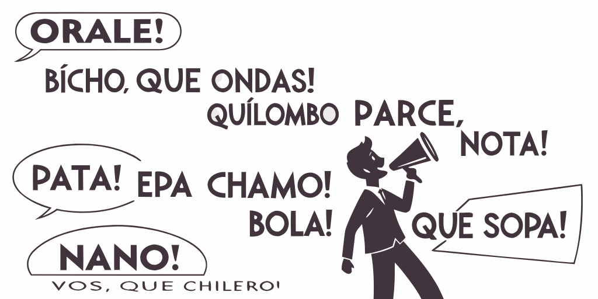

El Procesamiento de Lenguaje Natural en la Ciencia de Datos
INFOTEC
INGEOTEC

GitHub: https://github.com/INGEOTEC
WebPage: https://ingeotec.github.io/
Aguascalientes, México

INFOTEC
Centro de Investigación del Gobierno Federal, que contribuye a la Transformación Digital de México, a través de la investigación, la innovación, la formación académica y el desarrollo de productos y servicios TIC. Sus alcances abarcan al sector público y privado, habilitando caminos que conduzcan hacia un México moderno y de inclusión digital.
Introducción
Definiciones
Inteligencia Artificial (IA)
Conjunto de teorías, métodos y algoritmos para el desarrollo y estudio de sistemas que presentan un comportamiento que sería identificado como inteligente.
Aprendizaje Computacional
Aprendizaje Computacional es una subárea de Inteligencia Artificial que estudia el desarrollo e implementación de algoritmos capaces de aprender de datos de manera autónoma sin haber sido explícitamente programados.
Procesamiento de Lenguaje Natural
Conjunto de teorías, métodos y algoritmos para el desarrollo y estudio de sistemas que permitan el entendimiento, generación y manipulación del lenguaje humano.
Percepción de Inteligencia Artificial (IA)
Así la vemos

Así está

Aprendizaje computacional
Aprendizaje computacional
Tipos de aprendizaje computacional
- Aprendizaje no supervisado
- Aprendizaje supervisado
- Aprendizaje por refuerzo
Aprendizaje no supervisado

Aprendizaje por refuerzo
- Juegos
- Actividades
- Retroalimentación al final
Aplicaciones de Procesamiento de Lenguaje Natural
Aplicaciones de PLN (1/2)

Aplicaciones
- Minería de opinión
- positivo :) –neutro :| –negativo :(
- Análisis de tópicos
- Carga emotiva de un mensaje: enojo, anticipación, disgusto, miedo, gozo, tristeza, sorpresa, confianza.
- Identificación de humor
- Identificación de lenguaje de odio
Aplicaciones de PLN (2/2)
Aplicaciones
- Predicción indicadores socio-demográficos de usuarios de redes, e.g., edad, sexo, lugar de procedencia, ocupación
- Identificación de autoría: ¿quiénes escriben?, ¿cómo escriben?, ¿sobre qué escriben?
- Entender como se comportan usuarios, ¿qué desean?, ¿por qué?
- Medición de discurso de odio en redes sociales, e.g., xenofobia, racismo, misoginia, cyberbulling.
- Identificación de posibles trastornos mentales, e.g., ansiedad, depresión, adicciones.
- Aplicaciones a seguridad, salud, políticas públicas, economía y finanzas.

Algunos retos
Retos
- Escritos informales: muchos errores, onomatopeya, importación de términos, variaciones regionales, emojis, entre muchos otros.
- Contextos cortos, conocimiento del mundo.
- Negación, sarcasmo, ironía, humor.
- Semántica.
- Recursos lingüísticos reducidos para lenguajes diferentes del inglés.
- Multimedios.

Regionalización
Todo lo anterior puede regionalizarse, ya que un mismo lenguaje puede usarse de manera diferente en diferentes regiones.

Para tareas dónde haya una fuerte carga cultural o de idiosincrasia el uso de recursos regionalizados es provechoso.
Regionalización como herramienta
Entender las variaciones del lenguaje en las redes sociales es primordial ya que los mensajes suelen ser informales, y es común que los usuarios solo quieran ser leídos por su círculo de personas cercanas.
Preprocesamiento
Técnicas
- Tokenización
- Lemmatización
- Stopwords
- Etiquetado POS
- Análisis sintáctico
Función
- Dividir texto
- Reducir palabras
- Eliminar palabras
- Relaciona palabras
Clasificación de Textos
Clasificación de Textos
Definición
El objetivo es la clasificación de documentos en un número fijo de categorías predefinidas.
Polaridad
El día de mañana no podré ir con ustedes a la librería
Negativa
Tareas de Clasificación de Textos
Polaridad
Positiva, Negativa, Neutral
Emoción (Multiclase)
- Ira, Alegría, …
- Intensidad de una emoción
Evento (Binaria)
- Violento
- Delito

Perfilado de autores
Género
Hombre, Mujer, No binario, …
Edad
Niño, Adolescente, Adulto
Variedad de Lenguaje
- Español: España, Cuba, Argentina, México, …
- Inglés: Estados Unidos, Inglaterra, …

Dialect Identification (DialectId)
DialectId (1/2)
¿Qué es?
DialectId es un clasificador de texto basado en una representación de Bolsa de Palabras (BoW, por sus siglas en inglés, Bag of Words), utilizando SVM lineal como clasificador.
Procesamiento de normalización
- Caracteres en minúsculas
- Eliminar lo diacríticos
- Remplazar nombres de usuario por “_usr”
- Remplazar URLs por “_url”
Conjunto entrenamiento
Los tokens y sus pesos fueron estimados usando un conjunto de entrenamiento de cada idioma (2 millones de tuits).
DialectId (2/2)

Similutud entre países hispanohablantes